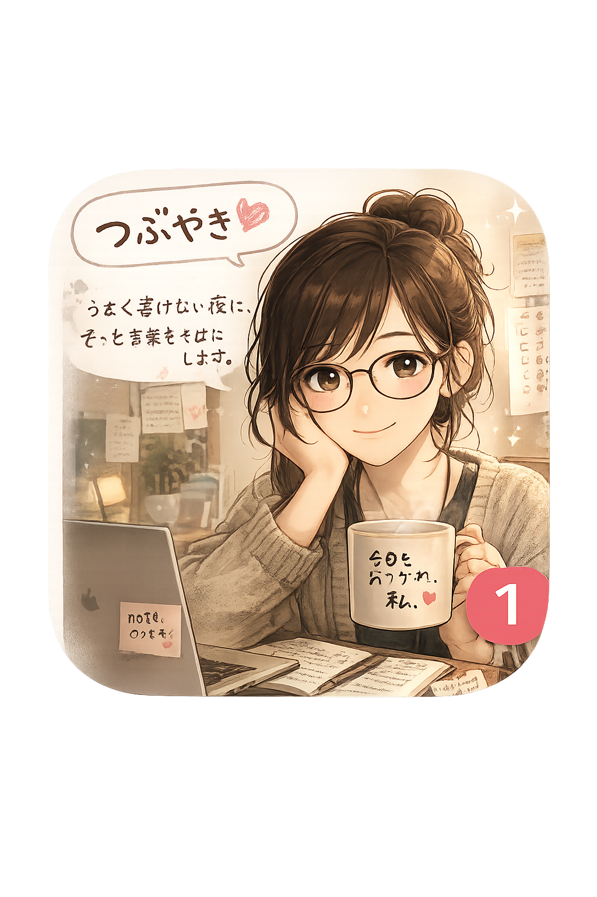

① Threads単体投稿
夜11時、机ぐちゃぐちゃのまま座ってる。 TODOは終わってない。 ノートを開いただけ。 もう眠い。
Threads投稿生成アプリ / 編集AI社員版 v4

このアプリはPDF読み取りとnote URL取得を使うため、直接ファイルではなくlocalhostで開きます。
localhostで開く夜11時、机ぐちゃぐちゃのまま座ってる。 TODOは終わってない。 ノートを開いただけ。 もう眠い。
ちゃんとした話にする元気がない。 眠いし、疲れてる。 SNS見てた。 コップもまだ流しにある。
4年半前は、異次元の話だと思ってた。 今は夜11時、机ぐちゃぐちゃのまま本文を書いてる。 点が線になる前の、まだ途中。 このあたり、noteに残しました。